- Aller dans le menu : Applications > Système > Gestionnaire de paquets Synaptic
- Une fenêtre apparait, Authentification requise avec le mot de passe pour Root (superutilisateur)
- Saisir le mot de passe pour Root (superutilisateur) et valider avec Entrée ou cliquer > S'authentifier
- A la première ouverture du Gestionnaire de paquets Synaptic, la fenêtre de présentation rapide apparaît.
Lire et cliquer > Fermer (il se peut que cette fenêtre n'apparaisse pas.) - L'application de Synaptic apparaît, composée de 6 zones :
- Barre de menus : Fichier, Edition, Paquets, Configuration, Aide.
- Barre d'outils : Permet les actions principales. Recharger, Tout mettre à niveau, etc...
- Sélecteur de catégorie : Affine la liste des paquets
- Liste des paquets : Répertorie les paquets connus. Peut être optimisé à l'aide de filtres.
- Champ de description : Affiche la description du paquet sélectionné.
- Barre d'état : Affiche des informations globales sur l'état de Synaptic.
- Cliquer sur le menu > Configuration, une fenêtre apparaît
- Cliquer sur > Dépôts, une fenêtre des Dépôts apparaît, l'agrandir avec le petit carré en haut à droite de cette fenêtre.
- Si l'installation de Debian a été faite via un support externe (exemple : clé usb) associé à une connexion internet :
Le fichier sources.list doit ressembler à ci-dessous. - Les prochaines mises à jour se feront par internet. Il n'y a plus besoin de pointer sur le cdrom.
Décocher la case cdrom - Ajouter les composants "contrib non-free" pour faire fonctionner certaines cartes wifi intégrées,
clés usb wifi et le bluetooth
Et changement de http > https pour utiliser les dépots sur des connexions HTTPS chiffrées. wiki.debian - En bas de la fenêtre saisir dans :
- Les modifications terminées, cliquer en bas à droite > Accepter
- Une fenêtre apparaît "Dépôts modifiés", cliquer > Recharger
Et laisser faire - A ce stade vérifier bien les modifications dans : Configuration > Dépôts
Si, les modifications se sont bien passées, quitter Synaptic.
Sinon, recommencer - Quitter le Gestionnaire de paquets Synaptic: Fichier > Quitter
- Vérifier la liste des changements dans sources.list
Aller dans : Application > Gestionnaire de fichiers > Système de fichiers > etc > apt
Positionner le pointeur de la souris sur "sources.list" > clic droit
Puis : Clic gauche > Ouvrir avec "Mousepad", Mousepad est un éditeur de texte. - L'éditeur de texte Mousepad s'ouvre. On doit retrouver les changements effectués.
Fermer Mousepad : Fichier > Quitter
Fermer le Gestionnaire de fichiers : Fichier > Fermer la fenêtre


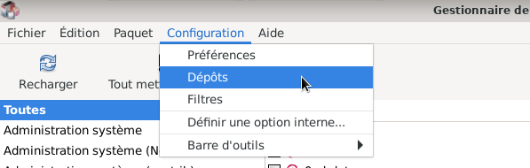
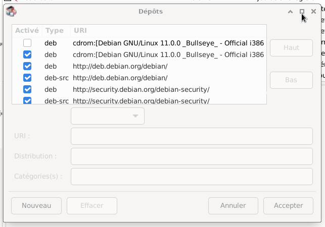
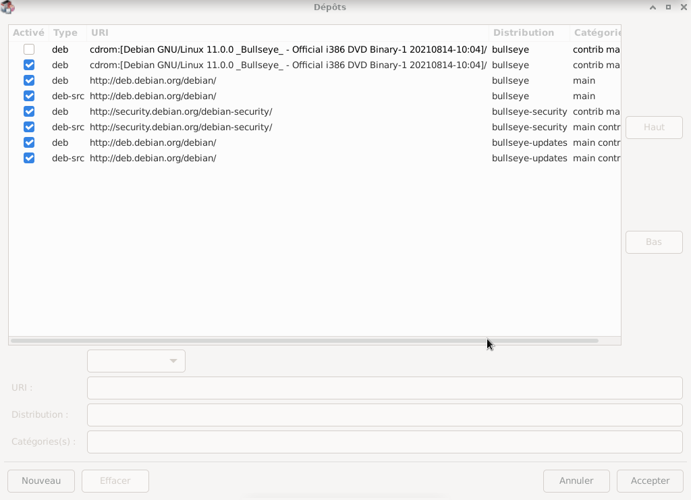
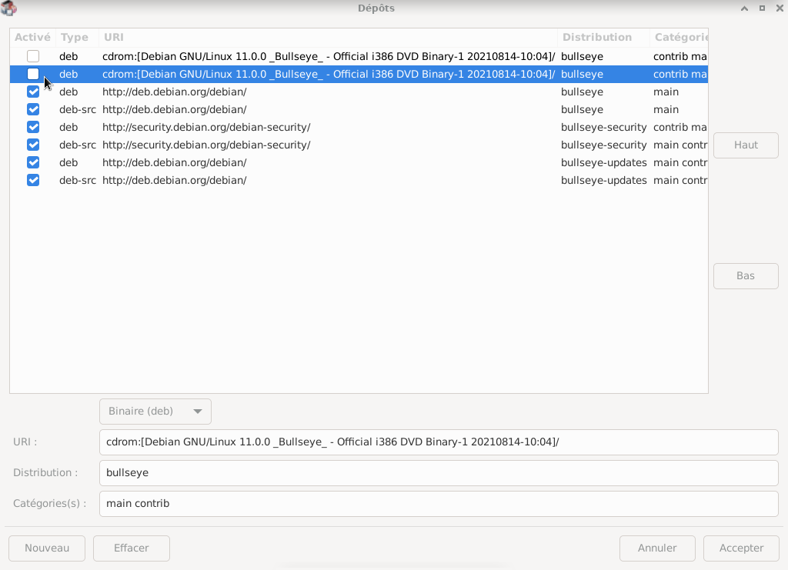
Modification de :
deb http://deb.debian.org/debian/ bullseye main
deb-src http://deb.debian.org/debian/ bullseye main
deb http://security.debian.org/debian-security/ bullseye-security main contrib
deb-src http://security.debian.org/debian-security/ bullseye-security main contrib
deb http://deb.debian.org/debian/ bullseye-updates main contrib
deb-src http://deb.debian.org/debian/ bullseye-updates main contrib
par :
deb https://deb.debian.org/debian/ bullseye main contrib non-free
deb-src https://deb.debian.org/debian/ bullseye main contrib non-free
deb https://security.debian.org/debian-security/ bullseye-security main contrib non-free
deb-src https://security.debian.org/debian-security/ bullseye-security main contrib non-free
deb https://deb.debian.org/debian/ bullseye-updates main contrib non-free
deb-src https://deb.debian.org/debian/ bullseye-updates main contrib non-free
Cliquer sur la ligne > deb http://deb.debian.org/debian/ bullseye main
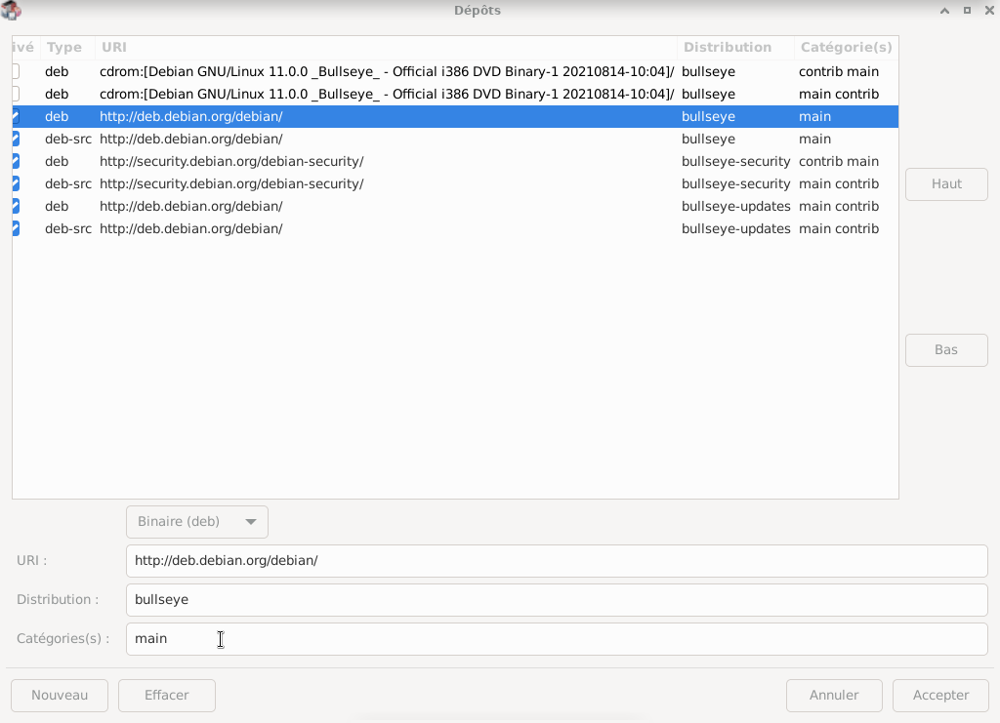
URI : https://deb.debian.org/debian/
Catégories : main contrib non-free
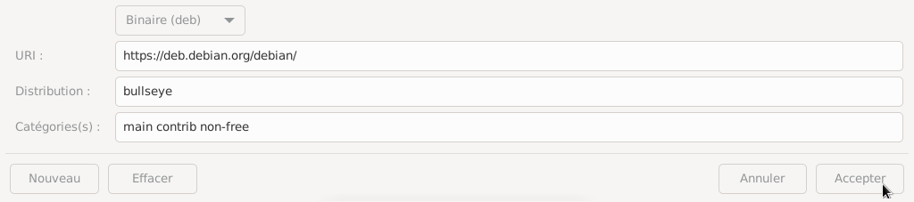
Faire la même manipulation pour les 5 autres types d'archives.
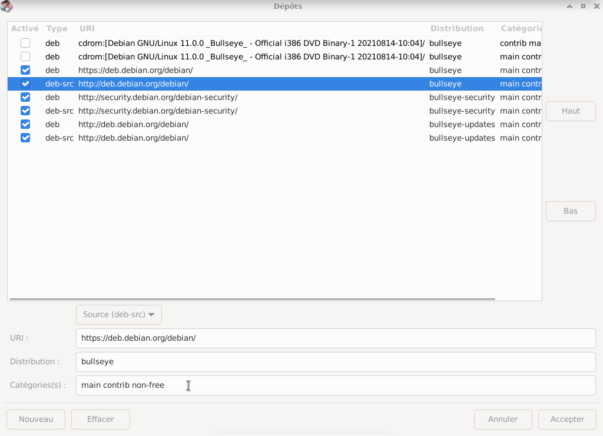
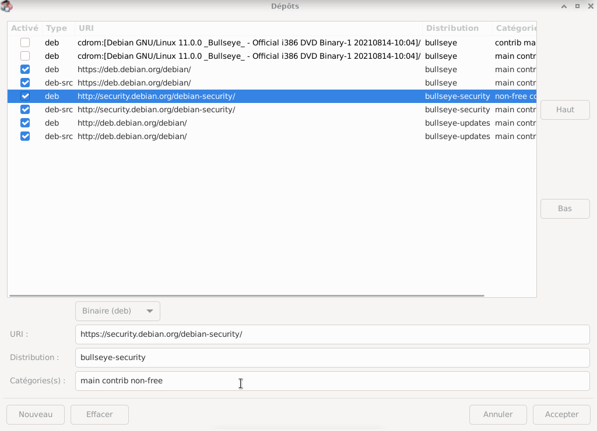
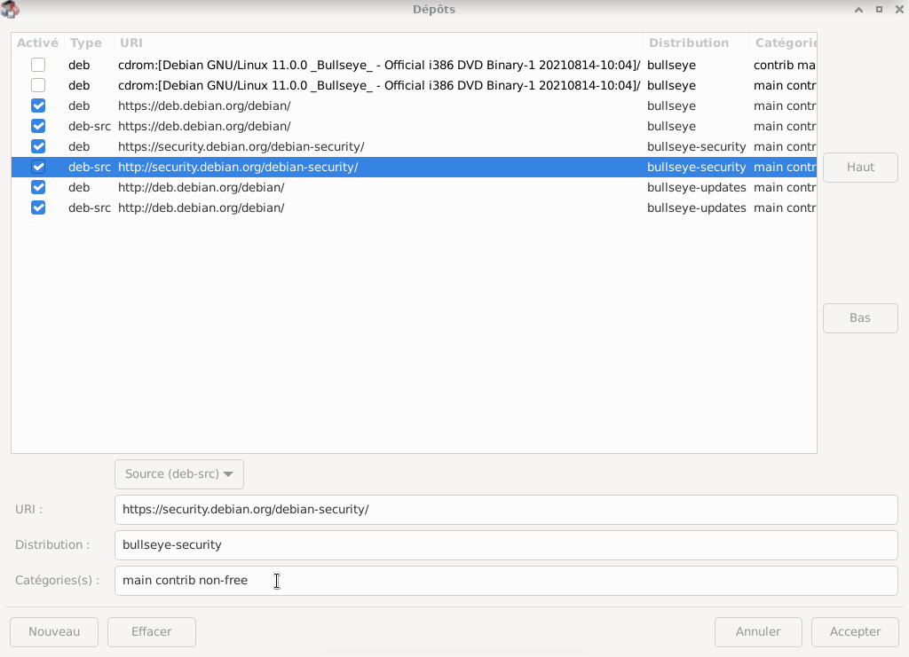
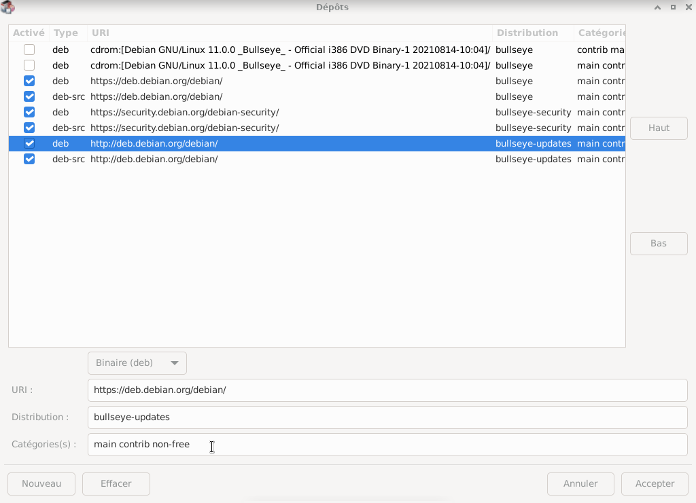
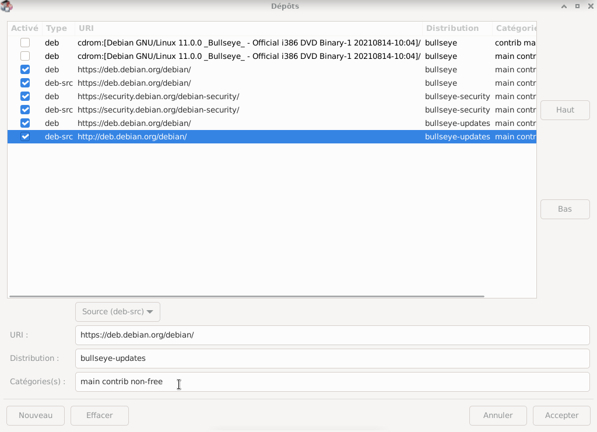
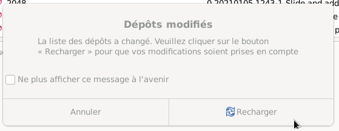

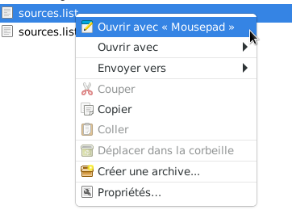